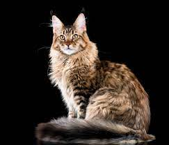
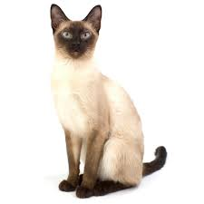

Cats are fascinating creatures known for their unique behavior and independent nature. With a reputation for being both affectionate and aloof, cats exhibit a wide range of behaviors that can vary depending on their breed, upbringing, and individual personality. Despite their independent streak, many cats form strong bonds with their human companions and enjoy affectionate interactions such as cuddling, headbutting, and purring. One of the most distinctive traits of cats is their innate curiosity—they love to explore their surroundings, investigate new objects, and observe their environment with keen interest. Cats are also skilled hunters, displaying stalking behavior and pouncing on prey-like toys or unsuspecting insects. However, cats also value their personal space and may seek solitude when they need time alone to rest and recharge. Overall, the complex and multifaceted behavior of cats adds to their allure as beloved pets and companions.
About Cats
Cat Breeds
- Persian
- Maine Coon 
- Siamese 

Hover over me!

Cat Care
| Number of Cats | Days per Week |
|---|---|
| 1 | 1-2 |
| 2 | 2-3 |
| 3 | 3-4 |
| 4 | 4-5 |
| 5 | 5-6 |